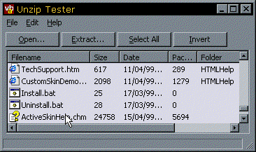

Info-ZIP Unzip DLL (Renamed vbuzip10.dll) (63K)
Info-ZIP Unzip DLL (Renamed vbuzip10.dll) (63K)
 Info-ZIP Zip DLL (Renamed vbzip10.dll) (71K)
Info-ZIP Zip DLL (Renamed vbzip10.dll) (71K)
 Info-ZIP Zip DLL With Encryption (Renamed vbzip11.dll) (72K)
Info-ZIP Zip DLL With Encryption (Renamed vbzip11.dll) (72K)
 26 Jan 2003
26 Jan 2003
Provided a new version of the Info-ZIP Zip32.DLL with encryption code compiled in. This enables you to create password-protected ZIP files.
 Zipping files using the free Info-Zip Zip DLL (now with encryption support)
Zipping files using the free Info-Zip Zip DLL (now with encryption support)
 Unzipping files using the free Info-Zip Unzip DLL with VB
Unzipping files using the free Info-Zip Unzip DLL with VB
 Visual Basic Project Zip Utility
Visual Basic Project Zip Utility

Introduction to the freeware Info-ZIP libraries
Add the ability to read and write ZIP files to your application without third-party controls
This project started when I was trying to build up the indexes for the vbAccelerator site. I had a program to search through all the HTML files which make up the site, and this could pick out the ZIP files linked to by the pages. But how to determine which projects these ZIP files contained? You need a way to read ZIP files. As usual with VB there are no library routines or standard controls available for ZIP files, so you need another way.
Luckily there is one, and its free! If you have a look at the Acknowledgements in the WinZip helpfile, you will find that the compression code for ZIP files is actually implemented using free code from the Info-ZIP group:
"WinZip incorporates compression code by the Info-ZIP group, which is used with their permission. Special thanks to the entire Info-Zip group, in particular to Jean-loup Gailly, Greg Roelofs, and Mark Adler. The original Info-Zip sources are freely available from CompuServe in the pcprog forum and by anonymous ftp from the Internet site ftp.uu.net:/pub/archiving/zip. We will also, upon request, mail you the Info-Zip sources if you send a self-addressed stamped envelope to the address in the WinZip "About" dialog box." |
Info-ZIP's purpose is to "provide free, portable, high-quality versions of the Zip and UnZip compressor-archiver utilities that are compatible with the DOS-based PKZIP by PKWARE, Inc." - and they do an excellent job at it. Their code runs on almost every OS ever devised (Tandem NSK?) and is also part of many products such as WinZip, PGP, the third party ActiveX control DynaZip and so on. The licensing arrangment for this DLL is classic freeware too: you cannot sell the product, but you are free to use it as you wish provided that (1) the customer does not believe Unzip is being sold and (2) the customer receives all normal documentation.
Using the Info-ZIP Unzip DLL from VB
The task of using Info-ZIP in VB is greatly assisted by two things:
- Info-ZIP being good enough to package their code into precompiled Win32 DLLs (note that these aren't ActiveX DLLs).
- The work of coders Raymond L. King, Christian Spieler, Mike Le Voi and Mike White who contributed Visual Basic modules to the Info-ZIP project.
Unfortunately, there are two problems directly related to this. The first is that the Win32 DLLs from Info-ZIP have a habit of mutating radically and incompatibly between versions. The second is that the VB modules supplied, although useful, are very difficult to reuse because you have to pick out the code from the presentation in the sample.
Which is where vbAccelerator comes in! Luckily we can deal with both of these problems.
1) The Curious Case of the Mad DLLs
One problem with using the Info-ZIP compiled DLL as-is is that the precompiled binaries supplied by the Info-ZIP group are for courtesy only, and the Win32 rules for DLL have not been followed, i.e. if you create a DLL which is not compatible with the previous version then you should change the name so you don't stop existing applications from working.
For example, the function for unzipping files was actually renamed from windll_unzip to Wiz_SingleEntryUnzip between versions! No doubt Info-ZIP have their reasons for this but if you had production code out there that used the older version then you would be stuffed - there would be no choice but to ship an entirely new version of your code.
You can prevent this happening to you by simply renaming the DLLs downloaded from the Info-ZIP site. In this case, I've renamed the latest versions of the Info-ZIP DLLs as follows:
| Original | Version | Name |
| zip32.dll | 2.30 | vbzip10.dll |
| zip32.dll with Encryption code compiled-in | 2.30 | vbzip11.dll |
| unzip32.dll | 5.40 | vbuzip10.dll |
When/if future versions appear, and it requires code to be changed, I will create new versions of the classes and rename the new versions of the DLL to the next number in the sequence.
Note that because these DLLs are Win32 DLLs and not ActiveX DLLs, they should be installed into the Windows\System directory of the target machine.
2) Code for Tommorrow - Building for Reuse
The Info-ZIP DLLs are somewhat alarming in that they have that C-coders "less is more" type of interface. For example, the Unzip DLL really has only one method, although this is complemented by some nasty callback functions, a structure with lots of members to fill in and six or seven parameters to cover all cases. Whilst this succinct model provides access to everything you need, its not so easy to use.
An easy way to manage this sort of functionality is to write a class wrapper which exposes the items in a more verbose but clearer manner. The result is a class with 4 events, 25 properties and 3 methods.
Try the Code
The other articles in this section demonstrate how to use the Zipping and Unzipping functions. You can also download the VBPZip application from the Utilities section to see how to use these functions in a useful application!